6.4.3.3. MQTT报文
6.4.3.3.1. MQTT控制报文格式
MQTT协议通过交换预定义的MQTT控制报文来通信，MQTT控制报文由三部分组成
Fixed Header: 固定报头，所有控制报文都包含
Variable Header: 可变报头，部分控制报文包含
Payload: 有效载荷，部分控制报文包含
6.4.3.3.1.1. 固定报头
固定报头格式
比特位 |
7 |
6 |
5 |
4 |
3 |
2 |
1 |
0 |
byte 1 |
MQTT控制报文类型 |
标志位 |
||||||
btye 2.. |
剩余长度 |
|||||||
MQTT控制报文类型
名字 |
值 |
报文流动方向 |
描述 |
Reserved |
0 |
禁止 |
|
CONNECT |
1 |
C——>S |
客户端请求连接服务端 |
CONACK |
2 |
S——>C |
连接报文确认 |
PUBLISH |
3 |
C<—–>S |
发布消息 |
PUBACK |
4 |
C<—–>S |
QOS 1消息发布收到确认 |
PUBREC |
5 |
C<—–>S |
发布收到(保证交付第一步) |
PUREL |
6 |
C<—–>S |
发布释放(保证交付第二步) |
PUBCOMP |
7 |
C<—–>S |
QOS 2消息发布完成(保证交付第三步) |
SUBSCRIBE |
8 |
C——>S |
客户端订阅请求 |
SUBACK |
9 |
S——>C |
订阅请求报文确认 |
UNSUBSCRIBE |
10 |
C——>S |
客户端取消订阅请求 |
UNSUBACK |
11 |
S——>C |
取消订阅报文确认 |
PINGREQ |
12 |
C——>S |
心跳请求 |
PINGRESP |
13 |
S——>C |
心跳响应 |
DISCONNECT |
14 |
C<—–>S |
断开连接通知 |
AUTH |
15 |
C<—–>S |
认证信息交换 |
标志位
控制报文 |
固定报头标志 |
b3 |
b2 |
b1 |
b0 |
PUBLISH |
used in mqtt v3.1.1 |
dup |
qos |
retain |
|
PUBREL |
Reserved |
0 |
0 |
1 |
0 |
SUBSCRIBE |
Reserved |
0 |
0 |
1 |
0 |
UNSUBSCRIBE |
Reserved |
0 |
0 |
1 |
0 |
备注
dup:控制报文重发的标志
qos:PUBLISH报文的服务质量等级
retain:PUBLISH报文保留标志,用于保留消息发送
剩余长度: 从第二字节开始，是一个变长字节的整数，用于表示当前控制报文剩余部分的字节数，包含可变报头和负载的数据
6.4.3.3.1.2. 可变报头(Variable Header)
可变报头部分包含了2个字节的报文标识符字段
控制类型 |
是否需要标识符字段 |
CONNECT |
否 |
CONNACK |
否 |
PUBLISH |
是(如果QOS>0) |
PUBACK |
是 |
PUBREC |
是 |
PUBREL |
是 |
PUBCOMP |
是 |
SUBSCRIBE |
是 |
SUBACK |
是 |
UNSUBSCRIBE |
是 |
UNSUBACK |
是 |
PINGREQ |
否 |
PINGRESP |
否 |
DISCONNECT |
否 |
AUTH |
否 |
Client Server
PUBLISH Packet Identifier = 0x1234 ----->
<----- PUBLISH Packet Identifier = 0x1234
PUBACK Packet Identifier = 0x1234 ----->
<----- PUBACK Packet Identifier = 0x1234
6.4.3.3.1.3. Payload
控制类型 |
是否需要payload |
CONNECT |
是 |
CONNACK |
否 |
PUBLISH |
可选 |
PUBACK |
否 |
PUBREC |
否 |
PUBREL |
否 |
PUBCOMP |
否 |
SUBSCRIBE |
是 |
SUBACK |
是 |
UNSUBSCRIBE |
是 |
UNSUBACK |
否 |
PINGREQ |
否 |
PINGRESP |
否 |
DISCONNECT |
否 |
6.4.3.3.2. MQTT控制报文
6.4.3.3.2.1. CONNECT - 客户端请求连接服务器
每个客户端只能发送一次CONNECT包，服务端会把此客户端再次发送的CONNECT包当作违反协议处理，并断开与此客户端的连接
固定报头: CONNECT包头
可变报头: 协议名字，协议等级，连接标识，保持连接
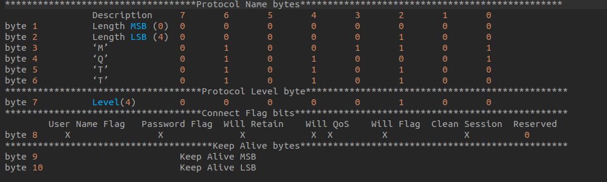
载荷: CONNECT包的载荷可以包含一个或多个带有长度前缀的字段，这取决于可变包头的标识，这些字段如果存在，必须按照这样的顺序(1.客户端唯一标识 2.Will Topic 3.Will Message 4.User Name 5.Password)
6.4.3.3.2.2. CONNACK - 确认收到连接请求
CONNACK包是服务端发送的用来响应客户端CONNECT包的一种数据包，从服务端发送到客户端的第一个包一定是CONNACK包.
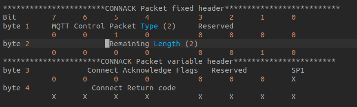
备注
字节3是连接确认标识，为7-1是保留位必须设置为0，位0(SP1)是session present标识
如果服务端接受了一个CleanSession设置为1的连接，服务端必须将CONNACK包中的session present设置为0，并且CONNACK包的返回码也设置为0.
如果服务端接受了一个CleanSession设置为0的连接，session present的值取决于服务端是否已经存储了客户端ID对应的会话状态．如果已经存储， session present必须设置为1,否则设置为0,另外CONNACK返回码也必须设置为0
6.4.3.3.2.3. PUBLISH - 发布消息
PUBLISH控制包可以从服务端发送到客户端也可以从客户端发送到服务端
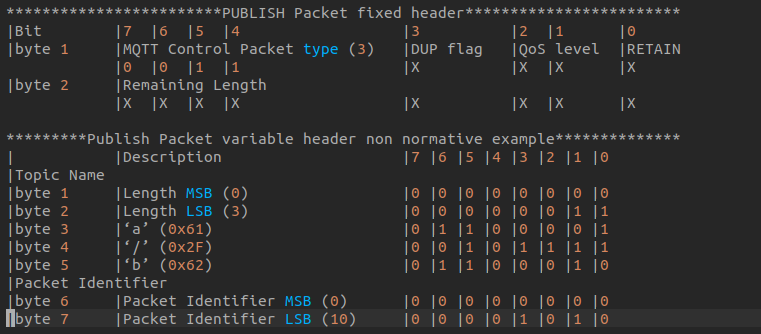
载荷包含了发布的应用消息，内容和格式由应用决定．载荷的长度可以由固定包头中的Remaining Length减去可变包头长度得到
PUBLISH包的接收方需要按照下表进行响应
QoS Level |
Expected Respinse |
QoS 0 |
None |
QoS 1 |
PUBACK Packet |
QoS 2 |
PUBREC Packet |
6.4.3.3.2.4. PUBACK - 发布确认
PUBACK包用来响应QoS等级为1的PUBLISH包
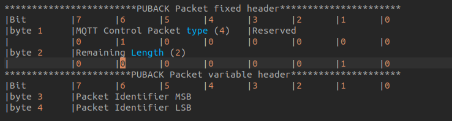
6.4.3.3.2.5. PUBREC - 发布收到
PUBREC包用来响应QoS 2的PUBLISH包，这是QoS 2协议交换的第二个包
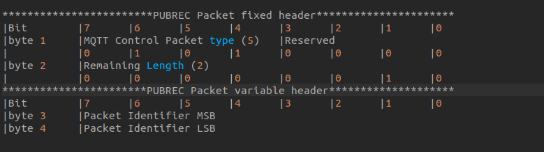
6.4.3.3.2.6. PUBREL - Publish release
PUBREL包用来响应PUBREC包，是QoS 2协议交换的第三部分
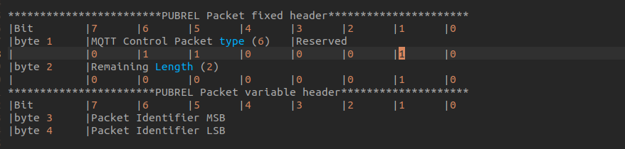
6.4.3.3.2.7. PUBCOMP - 发布完成
PUBCOMP包用来响应PUBREL包，这是QoS 2协议交换的第四个也是最后一个包
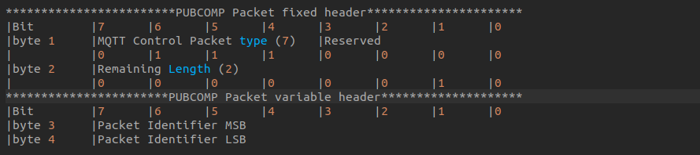
6.4.3.3.2.8. SUBSCRIBE - 订阅主题
SUBSCRIBE包从客户端发送到服务端创建一个或多个订阅
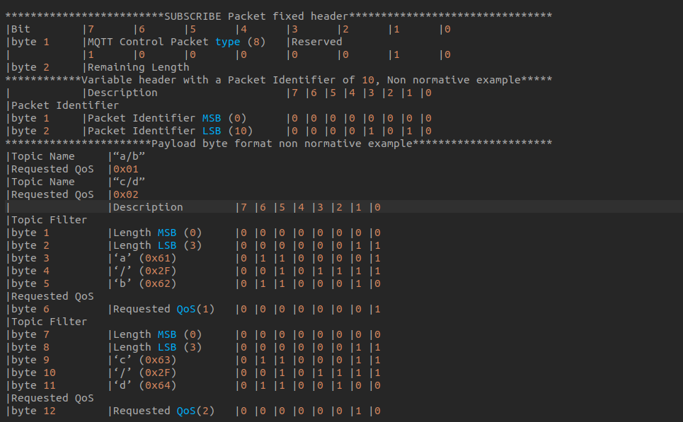
6.4.3.3.2.9. SUBACK - 订阅确认
SUBACK包从服务端发送给客户端，用来确认收到并处理了SUBSCRIBE包，且必须包含与相应SUBSCRIBE包相同的包唯一标识
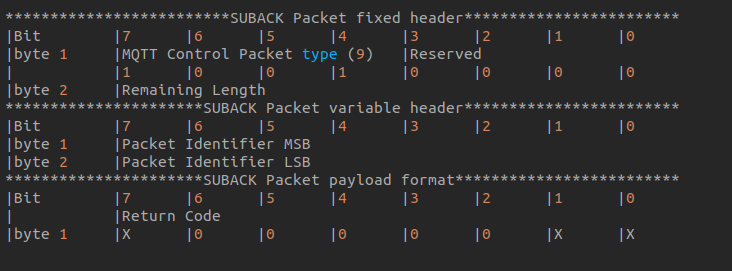
备注
载荷包含了返回码的列表，每个返回码对应SUBSCRIBE包中需要被确认的主题，SUBACK中的返回码顺序必须匹配SUBSCRIBE包中的主题顺序
6.4.3.3.2.10. UNSUBSCRIBE - 退订主题
UNSUBSCRIBE包从客户端发往服务端，用来退订主题
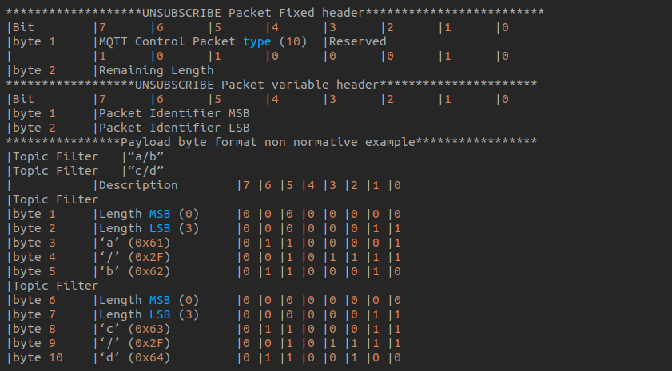
6.4.3.3.2.11. UNSUBACK - 退订确认
UNSUBACK包从服务端发送到客户端来确认收到UNSUBSCRIBE包
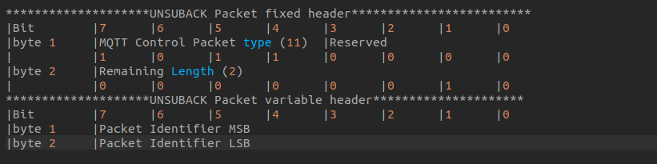
6.4.3.3.2.12. PINGREQ - PING请求
PINGREQ包从客户端发往服务端，可以用来
在没有其他控制包从客户端发往服务端时，告知服务端客户端的存活状态
请求服务端响应，来确认服务端是否存活
确认网络连接的有效性
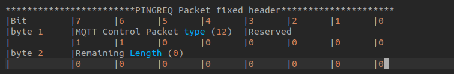
6.4.3.3.2.13. PINGRESP - PING响应
PINGRESP包从服务端发送给客户端来响应PINGREQ包，它代表服务端是存活的
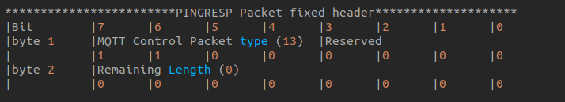
6.4.3.3.2.14. DISCONNECT - 断开连接通知
DISCONNECT包是客户端发送给服务端的最后一个控制包
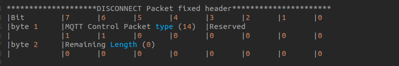